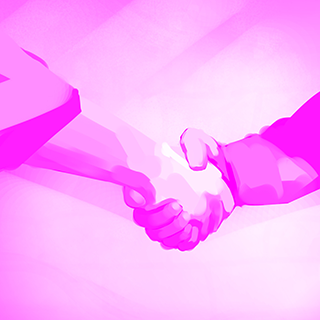

IT PÄIVÄT 2014 4.-5.11. NÄYTTELY

Tietoa näytteilleasettajille
It-päivät on kaksipäiväinen konferenssi, jonka tarkoitus on edistää korkeakoulujen yhteistyötä ja tiedonvaihtoa. Tarkoitus on siis sekä päivittää tietoutta, keskustella ja väitelläkin ajankohtaisista aiheista sekä verkostoitua niin korkeakoulujen, kuin toimittajienkin suuntaan.
IT-päivät tarjoaa erinomaisen mahdollisuuden tuoda omaa osaamistaan esille. Messuständien ohella voitte osallistua ohjelmaan monin eri tavoin.
Tervetuloa mukaan Korkeakoulujen IT-päiville 2014 näytteilleasettajana – käytä hyväksi tilaisuus tavata korkeakoulujen päättäjät ja asiantuntijat kasvokkain kahden päivän aikana.
Hinta ja varausohjeet
Näyttelytilat sijaitsevat keskeisellä paikalla Marina Congress Centerin I ja II kerroksessa, luentotilojen läheisyydessä. Näyttelytilojen yhteyteen järjestetään ruoka-, ja kahvitarjoilua.
Standin hinta on 2700 + alv 24 % (4m2). Hintaan sisältyy:
- pöytä ja tuoli (pöytä 70 x 140 cm ilman pöytäliinaa)
- osallistuminen luennoille (2 näytteilleasettajaa) -lisäosallistujat ostetteva erikseen tavallisina osallistujina!
- ruoka-, ja kahvitarjoilun sekä nimikortit kahdelle näytteilleasettajalle
- langaton verkkoyhteys
Lisätilauksesta: Sähkö 114 € + alv 24% = 150 € Sähkön voi tilata ilmoittautumisen yhteydessä ilmoittautumislomakkeella tai jälkikäteen info@meetingsmill.fi.
Lippuja iltajuhlaan 100 € + alv. / lippu (ravintola Apollo) = 124 € Liput voi ostaa ilmoittautumisen yhteydessä ilmoittautumislomakkeella tai jälkikäteen info@meetingsmill.fi.
Huom! Yhteistyökumppaneille kuuluu kaksi lippua iltajuhlaan veloituksetta. Lisälippuja voi ostaa ilmoittautumislomakkeella tai jälkikäteen info@meetingsmill.fi Jos haluatte iltajuhlaan logotettuja juomalippuja, voitte tilata ne suoraan Apollosta: petri.forsstrom@npg.fi 040 560 7345
Osaston varaus ja laskutus
Osasto ja sähkö varataan sähköisen lomakkeen kautta http://it2014.fi/ilmoittaudu.html (klikkaa nappia "ilmoittaudu") ja valitsemalla "yhteistyökumppani" ensimmäiseltä sivulta mielellään 15.9. 2014 mennessä . Mikäli tilaat ylimääräisiä illallislippuja ja ruokailijalla on ruoka-aine-allergia, ilmoitatko ystävällisesti Huom. kentässä ruokailijan nimen sekä allergian, jotta voimme informoida ruokapalveluiden tuottajaa.
Maksun voi suorittaa verkkopankissa, luottokortilla, tai laskulla. Varausvaiheessa laskutetaan 45 % osaston hinnasta, jolloin loppumaksu laskutetaan noin 1,5 kk ennen tapahtumaa. Laskutus voi tapahtua halutessanne erässä. Valinnan voi tehdä lomakkeella. Peruutusehdot: Mikäli näyttelyvaraus peruutetaan, varausmaksua ei palauteta. Näytteilleasettajan peruessa osallistumisensa 4.9.2014 tai sen jälkeen, peritään kaikki maksut täysimääräisenä. Peruutus on tehtävä kirjallisesti (sähköpostitse): info@meetingsmill.fi.
Ilmoittautuminen osallistujaksi tapahtumaan: Muiden kuin näyttelyosaston hintaan sisältyvien näytteilleasettajien osallistumisesta peritään tapahtuman normaali osallistumismaksu ja ilmoittautuminen tapahtuu lomakkeen kautta normaalisti.
Näyttelyosaston hintaan sisältyvien näytteilleasettajien ei tarvitse erikseen ilmoittautua osallistujiksi, vaan nimitiedot pyydetään osastovarausta tehdessä. Lisäkalusteet: WS-Expon kautta voi tilata lisäkalusteita osastolle ottamalla suoraan yhteyttä WS- Expoon sari.kallio@wsexpogroup.fi
Aikataulut ja näyttelyn pohjakartta
Näyttely on auki tiistaina 4.11.klo 09.00-17.00 sekä keskiviikkona 5.11 klo 8.30-16.00 Näyttelyä päästään rakentamaan tiistaina 4.11 klo 08.00 alkaen. Tällöin näyttelytilassa on valmiiksi pöydät ja tuolit.
Näyttelyalue muodostuu varaustilanteen mukaan. Varaukset käsitellään saapumisjärjestyksessä. Kartta näyttelyalueesta yhteistyökumppaneittain ja lista näytteilleasettajista päivitetään nettisivuille myöhemmin. Järjestäjä varaa itselleen oikeuden muutoksiin. Standit tulevat sijaitsemaan Europea-salin edessä olevassa lämpiössä, sekä yläkerrassa Fennia-ja Nordiasalien edessä:

Pysäköinti:
Asiakaspysäköintialueella (ulkopaikat) 15 € / ruutu / vrk
Hotellin parkkihalli 25 € / ruutu / vrk
Näytteilleasettajat vastaavat itse oman osastonsa rakentamisesta ja sisustamisesta.
Huom! Scandic Oy:llä / Marina Congress Centerillä on yksinoikeus ravintolatoimintaan. Näytteilleasettajat saavat tuoda omalla logolla varustettuja makeisia, mutta kaikki muut makeiset ja tarjoilut tilataan Marina Congress Centerin kautta. Tarjoilut varataan noin 1,5 kk ennen kongresssia erillisen linkin kautta joka lähetetään kaikille osaston varanneille.